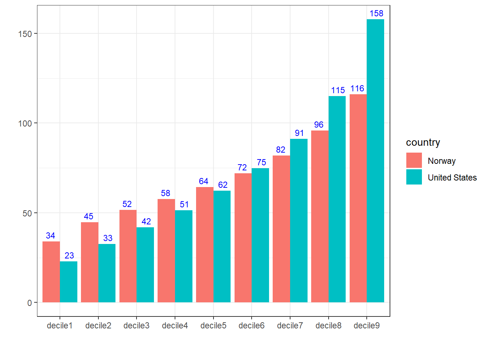
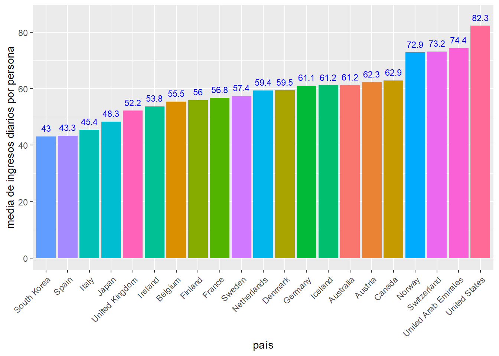

Análisis Exploratorio de Datos y Visualización
2026-08-13
1 Introducción
Este libro recoge los contenidos de un curso introductorio sobre análisis exploratorio de datos y visualización, diseñado para estudiantes universitarios de Ciencias de Datos. El análisis exploratorio de datos es un campo muy amplio, y no es posible abordar, en un solo curso, todos sus aspectos con la profundidad que merecen. Este curso, de carácter introductorio, tiene como objetivo proporcionar una base sólida en las herramientas más relevantes del campo. Cualquiera de los temas tratados puede dar lugar a un estudio mucho más detallado del que aquí se presenta, y se anima al lector a profundizar en aquellos que despierten su interés.
1.1 Fases de un análisis exploratorio de datos
Fases del análisis exploratorio de datos
El análisis exploratorio de una colección de datos pasa por las siguientes fases :
Establecer los objetivos de nuestro análisis de datos.
Buscar los datos necesarios para nuestro estudio e importarlos a nuestro entorno de trabajo.
Entender la información que contienen los datos y cómo están organizados.
Seleccionar las herramientas adecuadas para procesar y visualizar la información suministrada por los datos.
Transformar y ordenar los datos en función de los objetivos del estudio y los requerimientos de las herramientas que vamos a usar.
Aplicar modelos para establecer relaciones entre los datos o hacer predicciones
Comunicar los resultados de nuestro análisis de datos explicando las conclusiones, justificando los resultados de forma eficiente con gráficos atractivos.
Todas estas fases interactúan entre sí: por ejemplo, a la vista de los resultados obtenidos puede ser necesario incorporar nuevos datos para completar o confirmar conclusiones. El proceso ha de entenderse, por tanto, como un ciclo iterativo y no como una secuencia lineal de pasos.
1.2 Contenido del curso
El contenido del curso se organiza de la siguiente forma :
Tema 1 : Introducción. Se presentan las fases de un análisis exploratorio de datos, un resumen del contenido del curso, la justificación razonada de la elección de
Rcomo entorno unificado de desarrollo y otras cuestiones generales sobre el trabajo como científico de datos.Tema 2 : Aspectos básicos de
R. Se hará un repaso de los tipos y estructuras de datos que usaremos y de las funciones enR.Tema 3 : Procesado de datos. Se introducirán las bases de datos que usaremos, el manejo de los formatos habituales de almacenamiento de datos y las herramientas de manipulación de datos que suministra la librería
dplyr.Tema 4 : Visualización estática de datos. Se abordará la gramática de los gráficos, su implementación en el contexto de la potente librería
ggploty su uso para la generación de gráficos estáticos.Tema 5 : Series temporales. Por su importancia práctica, se estudia, en este tema, el caso particular del análisis exploratorio de series temporales incluyendo modelos de predicción.
Tema 6 : Visualización dinámica. A través del uso de las librerías
ggplotly,highcharteryleafletse introducen potentes herramientas de visualización interactiva donde el usuario puede interactuar con los gráficos o generar animaciones.Tema 7 : Cuadros de mando. A través del uso de las librerías
shinyyflexdashboardse introduce el diseño e implementación de cuadros de mandos que permiten representar, de forma dinámica, atractiva y coherente, los indicadores principales de nuestra exploración de datos.Tema 8 : Análisis de atributos. Se estudia la relación que puede existir entre diferentes variables a través, por ejemplo, de la correlación entre pares de variables, y cómo reducir el número de variables usando combinaciones lineales entre ellas a través del método del análisis de componentes principales.
1.3 Cómo buscar dentro del libro
El libro incorpora un buscador que recorre el texto completo de todos los capítulos, no solo el que estés leyendo. Se abre con el icono de la lupa, arriba a la izquierda. Merece la pena conocer sus atajos, porque no están a la vista y hacen la búsqueda mucho más ágil que ir capítulo por capítulo.
Atajos del buscador
Al escribir un término, ocurren dos cosas a la vez: el índice lateral se filtra para mostrar solo los capítulos y secciones donde aparece, y todas sus apariciones quedan resaltadas en la página que estás viendo.
Con el cursor dentro de la caja de búsqueda:
| Tecla | Efecto |
|---|---|
↓ o Intro |
ir a la siguiente aparición |
↑ |
ir a la aparición anterior |
Esc |
cerrar el buscador y quitar el resaltado |
La aparición en la que te encuentras se marca con un fondo naranja que se desvanece a los pocos segundos.
Lo más útil: cuando llegas a la última aparición de un capítulo, ↓ salta automáticamente al siguiente capítulo de los resultados y continúa allí, conservando la búsqueda. Así puedes recorrer todas las apariciones del libro entero sin tocar el ratón.
Si en algún momento trabajas con una copia local del libro descargada en tu ordenador, ten en cuenta que el buscador necesita que las páginas se sirvan correctamente; si no funcionara, siempre queda el Ctrl+F del navegador, que busca dentro de la página actual.
1.4 La elección de R
El entorno de trabajo que vamos a usar se basa en la habitual combinación de R, Rstudio y RMarkdown. En este curso, supondremos que el estudiante está mínimamente familiarizado con estas herramientas. Se recomiendan los siguientes tutoriales: tutorial 1, tutorial 2 y tutorial 3 como introducción básica al uso combinado de estas herramientas. También pueden ser útiles la ficha resumen de Rstudio y la ficha resumen de Markdown. En cualquier caso, el tema 1 se dedica a repasar el uso básico de R y se ha añadido el Apéndice 1 con la sintaxis básica de RMarkdown, que conviene consultar desde el primer momento en que se escriba un fichero .Rmd.
De entre las diferentes posibilidades de plataformas de desarrollo utilizables en Ciencias de Datos se ha decidido unificar todo el contenido del curso alrededor de R por los siguientes motivos :
Res un entorno libre de desarrollo de aplicaciones estadísticas y análisis de datos que ha tenido un enorme éxito e implantación a nivel mundial. Funciona muy bien, es robusto, es decir genera muy pocos fallos inesperados y se instala y gestiona fácilmente.Al ser
Rla plataforma de referencia para el análisis de datos, para cualquier librería importante relacionada con el tema que se implemente en otros lenguajes comopython,javascript, etc.., aparecen paquetes enRque sirven de interfaz para estas librerías. Esto es algo que se usa intensamente en este curso y tiene como efecto que la curva de aprendizaje de esas herramientas es mucho menor dado que se realiza todo desde el mismo entorno de desarrollo. Esto permite, en particular, abordar en un solo curso una gran colección de potentes herramientas que si se estudiaran cada una en sus particulares entornos de desarrollo, el aprendizaje sería mucho más complejo y sería imposible abordarlas en un solo curso.Unificar todas las herramientas alrededor de
Rnos permite concentrarnos en los aspectos conceptuales, que es, sin duda, lo más importante que vamos a aprender en este curso. Por otro lado, las herramientas de IA que existen actualmente permiten, fácilmente, transformar los códigos de un entorno de programación a otro, por ejemplo del entorno dado por la combinación de python - jupyter - notebook, que también es muy usado en Ciencias de Datos, al entorno R - RStudio - Rmarkdown.La combinación de
R,RstudioyRMarkdownresulta idónea para experimentar y familiarizarse con todos los conceptos que se estudian en el curso. Además, estas herramientas son usadas por un número tan grande de personas, que prácticamente, cualquier problema o error que surja, ha sido ya resuelto y buscando por Internet, generalmente es fácil encontrar la solución.
Nota: RStudio, Posit y Positron. La empresa que desarrolla RStudio se llama desde 2022 Posit. En 2024-2025 Posit lanzó Positron, su entorno de desarrollo de nueva generación orientado a la ciencia de datos, que integra
Rypythonen un mismo editor. Para este curso, RStudio sigue siendo el entorno recomendado (es maduro, está muy documentado y es el que asumen los tutoriales anteriores), pero conviene saber que Positron existe porque es probable que su uso crezca en los próximos años.
- El número de librerías con herramientas desarrolladas en
Res inmenso, solo en el repositorio CRAN, que es el repositorio oficial de referencia para almacenar y gestionar las librerías, hay más de 23000 librerías registradas. Hay librerías, comoggplot2, que usamos en el curso, que tienen más de 190 millones de descargas. El autor de este libro ha publicado en CRAN la librería EpiInvert especializada en el procesado de series temporales en Epidemiología. Cualquier persona puede, en teoría, publicar gratuitamente una librería en CRAN. Ahora bien, se piden unos requisitos técnicos de calidad bastante exigentes para que la librería sea aceptada.
1.5 Las virtudes de un científico de datos
Actitudes fundamentales del científico de datos
Neutralidad: Los datos deben hablar por sí solos, hay que eliminar cualquier idea preconcebida que tengamos sobre los resultados de nuestro Análisis de Datos que pueden introducir un sesgo en la selección de datos y conclusiones.
Espíritu crítico. Hay que analizar y valorar en detalle la calidad, veracidad y fiabilidad de la fuente de los datos que manejamos. Por ejemplo, los datos que suministra una estación meteorológica son muy fiables porque los instrumentos de medida que utiliza lo son. Los datos sobre el número de infectados diarios por la COVID-19 contienen errores importantes porque la forma de medir no es precisa dado que la logística de registro de casos no es capaz, sobre todo al principio de la epidemia, de gestionar y registrar todos los casos. Además, muchos casos, como los que no presentan síntomas, quedan directamente fuera del radar. Más allá de los errores en los sistemas de medición, otra fuente importante de falta de fiabilidad es el sesgo con el que pueden ser comunicados, en función del interés del que comunica los datos. Por ejemplo, decir que se han bajado los impuestos cuando el volumen de lo que se ha bajado es irrelevante y solo afecta a un grupo escaso de la población, no es técnicamente falso, pero el dato se está comunicando con un sesgo que desvirtúa la información que aportan los datos en su conjunto. De acuerdo con este espíritu crítico, al valorar la fiabilidad de la información que suministra una encuesta hay que tener muy en cuenta si la selección de la muestra de la población ha sido adecuada, por ejemplo, los encuestados no pueden proponerse ellos mismos para responder (por ejemplo una encuesta online voluntaria). Un ejemplo paradigmático sobre este asunto es la pregunta que realizó a sus lectores la periodista Ann Landers en 1976 donde consultaba a los padres en USA si volverían a tener hijos en caso de volver atrás y tener la opción de elegir. De los 10000 padres que respondieron a la pregunta de forma voluntaria, el 70% respondió que no volverían a tener hijos. Posteriormente, el periódico NewsDay realizó una encuesta seleccionando ellos de forma aleatoria a los padres para responder a la pregunta, y el resultado fue que el 91% respondió que sí volvería a tener hijos, es decir algo diametralmente opuesto a lo obtenido en la primera encuesta. La justificación de esta enorme diferencia es muy sencilla. Los padres que están más inclinados a responder voluntariamente a la pregunta son aquellos que tienen problemas con sus hijos, los padres a los que les va bien con sus hijos y están contentos de haberlos tenido, tienen mucho menos interés en participar voluntariamente en la encuesta. Este mismo principio se puede aplicar a las encuestas online voluntarias que se realizan a los alumnos para evaluar a los profesores.
Valoración relevancia de atributos. No todos los atributos son igualmente importantes. Por ejemplo, a la hora de valorar el grado de desarrollo de un país (ver [RRR18]), el dato de mortalidad infantil es especialmente relevante porque el esfuerzo de las familias para mantener vivos a sus hijos es siempre máximo y es uno de los primeros parámetros que mejora/empeora cuando varía la situación de un país.
Un ratio es mejor que un valor numérico aislado. En general un valor numérico aislado suministra información difícil de interpretar. Por ejemplo, el beneficio anual de una empresa es un dato difícil de interpretar si no se compara con algo. Comparar ese dato, con los beneficios de la anualidad anterior o con la cantidad de capital invertido y gastos de funcionamiento suministra una información más útil. De la misma forma, a efectos de comparar la riqueza entre países, la renta per cápita, suministra un dato más útil que la renta de todo el país.
Ser consciente de la limitación de los datos que manejamos. En general, los datos que manejamos son el resultado de la acumulación de valores muy diversos. Por ejemplo, la renta per cápita de un país no nos dice nada de las desigualdades, en términos de riqueza, que existen dentro de dicho país.
Evitar las generalizaciones. Nuestra tendencia natural es generalizar a partir de los datos particulares conocidos. Por ejemplo, los medios de comunicación ponen mucho énfasis en comunicar los actos violentos, lo que nos puede llevar a pensar, generalizando, que vivimos en una sociedad muy violenta. Sin embargo, la realidad que suministran los datos es que vivimos en la sociedad menos violenta que ha existido nunca.
Las conclusiones siempre deben estar soportadas por datos. En cualquier memoria, proyecto o informe realizado por un científico de datos, todas las afirmaciones y conclusiones deben estar soportadas por una correcta interpretación de datos con indicación de la fuente.
1.6 El uso de la IA en el análisis de datos
La IA como acelerador, no como sustituto del criterio
Los asistentes de IA forman ya parte del trabajo diario del científico de datos: ayudan a escribir código, a depurar errores y a explorar enfoques con una rapidez impensable hace pocos años. Usarlos es legítimo y recomendable, siempre que se entienda y se verifique lo que producen. Los riesgos específicos que hay que conocer son:
Código que “funciona” pero hace otra cosa. La IA puede generar código sin errores de sintaxis que, sin embargo, no calcula lo que se le pidió (un filtro mal aplicado, una agregación sobre el grupo equivocado). Si el resultado “parece razonable”, el error puede pasar inadvertido. Hay que verificar los resultados con casos que se puedan comprobar a mano.
Cifras y referencias alucinadas. Un asistente de IA puede presentar con total seguridad datos, funciones o referencias bibliográficas que no existen. Todo dato o cita que provenga de una IA debe contrastarse con su fuente original.
Pérdida de comprensión. Si se acepta código generado sin entenderlo, se pierde la capacidad de detectar cuándo falla y de adaptarlo. Una regla práctica para el estudiante: no incorporar ninguna porción de código que no sea capaz de explicar línea a línea.
La responsabilidad no se delega. El responsable de las conclusiones de un análisis es siempre el analista, use o no IA. “Lo hizo la IA” no es una justificación válida para un resultado erróneo, un sesgo no detectado o una fuente inventada.
En coherencia con el espíritu crítico que se defiende en este capítulo: la IA es una herramienta poderosa precisamente para quien tiene el criterio de valorar lo que produce.
1.7 Ética y responsabilidad en el análisis de datos
Consideraciones éticas en el análisis de datos
El científico de datos trabaja con información que puede tener un impacto significativo en las personas y en la sociedad. Por ello, es fundamental tener en cuenta las siguientes consideraciones éticas:
Privacidad y protección de datos. Los datos personales deben tratarse con especial cuidado. El Reglamento General de Protección de Datos (RGPD) de la Unión Europea establece un marco legal estricto sobre cómo se pueden recopilar, almacenar y procesar datos personales. El científico de datos debe asegurarse de que los datos que maneja cumplen con la normativa vigente, y de que se aplican técnicas de anonimización cuando sea necesario.
Sesgos en los datos. Los datos no son neutros. Reflejan las decisiones de quienes los recopilan: qué se mide, cómo se mide, a quién se mide. Un dataset de solicitudes de empleo puede contener sesgos históricos de género o raza. Un modelo de riesgo crediticio entrenado con datos sesgados puede discriminar injustamente. El buen científico de datos debe:
- Examinar el origen y el proceso de recopilación de los datos.
- Identificar qué grupos o perspectivas pueden estar infrarrepresentados.
- Evaluar si las conclusiones obtenidas podrían perjudicar a colectivos vulnerables.
- Documentar las limitaciones conocidas de los datos en cualquier informe o producto.
Reproducibilidad. Un análisis de datos debe poder ser reproducido por terceros para verificar sus conclusiones. Para ello, es importante documentar el código, fijar semillas aleatorias (set.seed() en R), registrar las versiones de los paquetes utilizados y facilitar el acceso a los datos originales siempre que sea posible. Las herramientas estándar para esto son renv, que registra en el proyecto las versiones exactas de todos los paquetes usados (con renv::init() y renv::snapshot()) de modo que cualquier persona pueda restaurar el mismo entorno con renv::restore(), y el control de versiones con Git (y plataformas como GitHub), que guarda el historial completo de cambios del código y es hoy una competencia básica del científico de datos. No las usaremos de forma obligatoria en este curso, pero conviene incorporarlas cuanto antes al flujo de trabajo personal.
Comunicación responsable. La forma en que se presentan los datos puede influir en la percepción del público. Elegir escalas inadecuadas en un gráfico, omitir datos relevantes, o presentar correlaciones como causalidades son prácticas que, aunque técnicamente pueden no ser erróneas, resultan engañosas. El científico de datos tiene la responsabilidad de comunicar de forma clara, precisa y honesta.
Como referencia fundamental sobre estos temas se recomienda la lectura de [ONe16] Weapons of Math Destruction de Cathy O’Neil, que analiza cómo los algoritmos y modelos basados en datos pueden perpetuar y amplificar desigualdades sociales.
1.8 La trampa del pensamiento binario y la simplificación de la realidad.
Los seres humanos nos encontramos cómodos dividiendo la realidad que nos rodea en 2 partes que se contraponen. Por ejemplo países ricos versus países pobres, ser de izquierdas o ser de derechas, personas buenas versus personas malas, nuestro entorno versus el resto del mundo, etc.. Nuestra tendencia natural a este pensamiento binario nos facilita la interpretación de la realidad y nos hace la vida más fácil. Sin embargo, y es algo que debe tener en cuenta siempre el científico de datos, la realidad es mucho más compleja y tiene muchos más matices que lo que puede reflejar esta tendencia a separarla en dos grupos contrapuestos. Otra forma de simplificación frecuente es el uso de un único atributo para analizar una realidad compleja. Tomemos como ejemplo la media de ingresos diarios por persona, en dólares, y en algunos países, obtenidos a partir de la OWID y reflejada en el siguiente gráfico:

Vemos que la media de ingresos proporciona una primera comparativa útil entre países. Sin embargo, el uso exclusivo de la media, aunque ofrece información valiosa, oculta matices relevantes de la realidad, como los niveles de igualdad en la distribución de los ingresos dentro de cada país. Por ejemplo, Estados Unidos presenta una media de ingresos significativamente superior a la de Noruega. Sin embargo, si dividimos el nivel salarial en diez grupos (deciles) y comparamos los resultados para ambos países, obtenemos:

Conclusión clave: los datos admiten múltiples interpretaciones válidas
es decir, en Estados Unidos hay un 10 % de la población que gana más de 158 dólares diarios y, en el extremo opuesto, otro 10 % que gana menos de 23 dólares. En Noruega, en cambio, el decil superior supera los 116 dólares, mientras que el inferior no baja de 34 dólares: se trata, por tanto, de un país con una desigualdad de ingresos sensiblemente menor. Lo que eleva la media de Estados Unidos por encima de la de Noruega es que los ingresos de los más ricos son notablemente superiores. Utilizando la mediana (decile5), en lugar de la media, se observa que los ingresos diarios en Noruega (64 dólares) son superiores a los de Estados Unidos (62 dólares). De esta forma, la pregunta ¿en cuál de los dos países la población tiene un mayor nivel de ingresos? puede tener respuestas distintas dependiendo del indicador elegido. En el análisis de datos, una misma cuestión puede admitir respuestas aparentemente contradictorias, siendo ambas coherentes y bien fundamentadas en función de los datos, los indicadores utilizados y su interpretación. Las conclusiones que extraemos no son una verdad absoluta; a lo más que podemos aspirar es a que sean coherentes con los datos analizados y con los criterios metodológicos utilizados.
Volviendo al ejemplo de los ingresos, otro aspecto relevante es la variabilidad geográfica dentro de un mismo país. Si examinamos la distribución del salario medio bruto mensual por comunidades autónomas en España en 2022 ordenadas de menor a mayor para facilitar la comparación:

observamos que, mientras en el País Vasco el salario medio asciende a 2.546 euros mensuales, en Canarias se sitúa en 1.869 euros, lo que refleja realidades económicas muy dispares que quedan ocultas cuando se observa únicamente el promedio nacional.
El objetivo de este análisis es mostrar cómo el científico de datos debe ir más allá de la tendencia al pensamiento binario y a la simplificación de la realidad, y esforzarse por mostrar, a partir de los datos, toda la riqueza de matices que estos contienen.
1.9 El principio de Pareto para simplificar los datos
Con frecuencia, al manejar tablas con gran cantidad de registros, resulta difícil extraer una visión global de la información. Por ejemplo, al estudiar las emisiones de gases de efecto invernadero (GHG) por países en 2024. Para obtener una perspectiva manejable podemos concentrarnos en los países responsables de la mayor parte de las emisiones totales, aplicando el principio de Pareto, también denominado regla 80/20: el 80 % de los efectos proviene del 20 % de las causas. Este principio puede aplicarse de dos formas: seleccionando el 20 % de los países que más emiten, o —una opción metodológicamente más sólida— seleccionando el menor número de países cuya emisión acumulada supera el 80 % del total mundial. De esta manera garantizamos que el análisis cubre una porción significativa y representativa del problema. Apliquemos esto a los datos de 2024, año en que las emisiones globales alcanzaron aproximadamente 53.206 millones de toneladas. En la siguiente tabla, elaborada a partir de la base de datos EDGAR, se muestran las siguientes variables: GHG : las emisiones por país ordenadas de mayor a menor, PORC_VAR_ANUAL: la variación porcentual respecto a 2023, PORC_TOTAL: el porcentaje de emisiones del país sobre el total mundial y PORC_ACUMULADO: el porcentaje sobre el total acumulado al ir añadiendo países (nos quedamos con los países hasta que este porcentaje llega al 80%). Como puede observarse, solo China emite el 29,2% del total, y los cuatro primeros países ya superan conjuntamente el 50%. Para alcanzar el umbral del 80% es necesario incluir los primeros 24 países. El umbral del 80% es orientativo y puede ajustarse en función de los objetivos del estudio. Otro dato interesante es que los países en vías de desarrollo son donde más crecen anualmente las emisiones, como la India (un 3,92%), Indonesia (4,95%) o Vietnam (7,61%), mientras que los países europeos están en fase de decrecimiento de las emisiones. Observamos que la navegación por barcos a nivel mundial produce emisiones de una magnitud similar a un país como Canadá y que la aviación a nivel mundial produce emisiones de una magnitud similar a un país como Australia y con un fuerte crecimiento anual (7,61%)
| Country | GHG | PORC_VAR_ANUAL | PORC_TOTAL | PORC_ACUMULADO |
|---|---|---|---|---|
| China | 15536 | 0.81% | 29.2% | 29.2% |
| United States | 5913 | 0.37% | 11.11% | 40.31% |
| India | 4371 | 3.92% | 8.22% | 48.53% |
| Russia | 2576 | 2.5% | 4.84% | 53.37% |
| Indonesia | 1324 | 4.95% | 2.49% | 55.86% |
| Brazil | 1299 | 0.15% | 2.44% | 58.3% |
| Japan | 1063 | -2.81% | 2% | 60.3% |
| Iran | 1055 | 2.39% | 1.98% | 62.28% |
| Saudi Arabia | 839 | 2.53% | 1.58% | 63.86% |
| Canada | 768 | 1.7% | 1.44% | 65.3% |
| International Shipping | 737 | -2.04% | 1.39% | 66.69% |
| Mexico | 687 | 0.16% | 1.29% | 67.98% |
| Germany | 674 | -1.65% | 1.27% | 69.24% |
| South Korea | 668 | -0.28% | 1.26% | 70.5% |
| International Aviation | 622 | 7.61% | 1.17% | 71.67% |
| Australia | 591 | 0.67% | 1.11% | 72.78% |
| Viet Nam | 584 | 7.61% | 1.1% | 73.88% |
| Türkiye | 580 | 2.74% | 1.09% | 74.97% |
| South Africa | 570 | 2.59% | 1.07% | 76.04% |
| Pakistan | 526 | 0.7% | 0.99% | 77.03% |
| Thailand | 422 | 2.86% | 0.79% | 77.82% |
| Iraq | 413 | 2% | 0.78% | 78.6% |
| United Kingdom | 387 | -3.47% | 0.73% | 79.32% |
| Egypt | 387 | 4.56% | 0.73% | 80.05% |
1.10 La tiranía de las métricas
Una métrica es cualquier observación o medida que se utiliza para evaluar algo. En Ciencias de Datos manejamos constantemente métricas; por ello, es fundamental reflexionar sobre sus limitaciones cuando el factor humano está presente.
Nota sobre los ejemplos
Los ejemplos que se exponen a continuación (educativos, laborales o sanitarios) se emplean únicamente para ilustrar un fenómeno metodológico —cómo una métrica se distorsiona cuando condiciona incentivos— y no pretenden emitir un juicio político ni valorar la gestión de ninguna administración concreta. El objetivo es exclusivamente que el estudiante reconozca el mecanismo para poder detectarlo y evitarlo en su propio trabajo con datos.
En 1975, el economista británico Charles Goodhart planteó la tesis de que cualquier regularidad estadística tiende a colapsar una vez que se presiona para su control. Este principio fue sintetizado más tarde por la antropóloga británica Marilyn Strathern (1997) en una frase célebre: “Cuando una medida se convierte en un objetivo, deja de ser una buena medida”. El historiador Jerry Z. Muller [Mul18] profundizó en esta idea en su libro The Tyranny of Metrics, donde concluye que el comportamiento humano siempre se adapta de forma estratégica a los incentivos, desvirtuando, en muchos casos, el propósito inicial de la evaluación. De forma complementaria, el psicólogo social Donald T. Campbell formuló en 1976 una ley específica para los indicadores sociales: cuanto más se utiliza un indicador cuantitativo para la toma de decisiones, más sujeto estará a presiones que lo corrompen y más tenderá a distorsionar el proceso social que pretendía medir.
1.10.1 El ámbito educativo: aprobar no es aprender
Un claro ejemplo de este fenómeno se encuentra en el sistema educativo. Por ejemplo, los exámenes de acceso a la universidad representan una métrica para evaluar las competencias de los alumnos. Sin embargo, la presión en los centros educativos para que los alumnos obtengan buenos resultados ha convertido el segundo curso de bachillerato en un curso de preparación de estos exámenes abandonando el objetivo de enseñar por el objetivo de optimizar los resultados de las pruebas.
El caso de las Matemáticas es paradigmático: su preparación se basa frecuentemente en la repetición mecánica de técnicas de resolución de ejercicios extraídos de exámenes de años anteriores. Desde una perspectiva puramente pragmática, resulta más efectivo memorizar la mecánica algorítmica —aun sin comprender la lógica subyacente— que asimilar el razonamiento abstracto, que es lo verdaderamente valioso en esta disciplina. De este modo, se sustituyen los objetivos del aprendizaje por la optimización de una métrica que, irónicamente, fue diseñada para evaluar dicho aprendizaje.
Esta distorsión se traslada a la gestión institucional a través de métricas como la tasa de aprobados o la ratio de promoción de curso. En todos los niveles educativos, desde la primaria hasta la universidad, los centros compiten entre sí por mejorar estos indicadores para atraer alumnado y obtener beneficios vinculados a resultados. Dado que las políticas de mejora del aprendizaje real solo ofrecen resultados a medio o largo plazo, el atajo administrativo consiste en presionar al profesorado para que incremente los aprobados mediante la devaluación de los estándares de exigencia. En el entorno universitario, donde no existe, de facto, un sistema de verificación real de las competencias de los alumnos que han terminado la carrera, un docente que no enseñe nada y apruebe a todos los alumnos habrá cumplido formalmente con los objetivos de la métrica sin que el sistema lo penalice. El precio latente de esta dinámica son las severas carencias que tendrán estos egresados en términos de pensamiento crítico y en su capacidad para la resolución de problemas en el ejercicio profesional.
1.10.2 El ámbito político: la manipulación estadística del bienestar
La instrumentalización de las métricas es especialmente habitual en la arena política, donde los gestores necesitan exhibir mejoras cuantitativas como evidencia de una gestión exitosa.
En el mercado laboral español, la reforma de 2021 restringió severamente la contratación temporal ordinaria. Para los sectores estacionales (como la hostelería, el turismo o la agricultura), la alternativa legal pasó a ser el contrato fijo-discontinuo. Sobre el papel, el trabajador pasa a computar como indefinido, lo que provocó un desplome inmediato de la tasa de temporalidad oficial. Además, cuando estos trabajadores entran en periodo de inactividad —aunque perciban la prestación por desempleo— no se contabilizan como desempleados. Esta modificación normativa generó una mejora extraordinaria en las métricas de empleo; sin embargo, la realidad material subyacente no varió: el trabajador sigue desempeñando una labor intermitente y afrontando periodos de desocupación en temporada baja. La métrica mejoró, pero no porque mejorara la realidad que pretendía medir.
Un comportamiento homólogo se observa en la gestión sanitaria, donde la reducción de los tiempos de espera para atención primaria, especialistas, pruebas diagnósticas e intervenciones quirúrgicas constituye una prioridad política. Para optimizar estos indicadores sin incrementar proporcionalmente los recursos estructurales, se recurre a la manipulación de los indicadores (gaming the metrics); se han documentado prácticas como:
- Bloqueo de agendas: se impide informáticamente la asignación de citas cuando no hay disponibilidad inmediata. Al no registrarse la solicitud, el “reloj” de la lista de espera oficial no se activa.
- Barreras de acceso a la especialización: se dilata o deniega administrativamente la derivación desde atención primaria a los especialistas para contener el volumen de las listas de espera secundarias.
- Rechazos voluntarios inducidos: se ofrece al paciente, de un día para otro, ser intervenido en centros concertados periféricos o con equipos médicos distintos. Si el paciente solicita tiempo para valorar la propuesta o prefiere esperar a su hospital de referencia, se tipifica como una “baja voluntaria de la lista de espera garantizada”, lo que detiene los plazos legales de demora atribuibles a la administración.
- Priorización inversa: consiste en priorizar intervenciones quirúrgicas de baja complejidad y rápida resolución (como cataratas) frente a patologías graves y complejas. Esto permite dar de alta a un mayor volumen de pacientes en menos tiempo, reduciendo drásticamente la demora media de las estadísticas, a costa de postergar a los pacientes crónicos o severos.
1.10.3 Cómo mitigar la tiranía de las métricas
La métrica no es el enemigo; lo es su uso ingenuo como objetivo único. Algunas salvaguardas habituales:
- No optimizar un solo indicador: combinar varias métricas que se contrapesen dificulta “hackear” una de ellas de forma aislada.
- Acompañar lo cuantitativo con lo cualitativo: el juicio experto y la observación directa capturan lo que el número no refleja.
- Mantener la medida como guía, no como objetivo absoluto: en cuanto un indicador se convierte en el fin, conviene revisarlo, completarlo o rotarlo.
- Vigilar los incentivos: anticipar cómo se adaptarán las personas evaluadas y auditar periódicamente el dato frente a la realidad que pretende representar.
Conclusión
El análisis de estos escenarios demuestra que cualquier métrica cuya evaluación dependa de factores humanos o condicione incentivos tiende a corromperse. La capacidad adaptativa del ser humano le impulsa a diseñar soluciones ingeniosas para “hackear” el indicador y maximizar el beneficio aparente con el menor esfuerzo operativo posible, sacrificando por completo el propósito y los valores fundamentales que la métrica originalmente intentaba salvaguardar; de ahí la responsabilidad del científico de datos de elegir, interpretar y comunicar sus métricas con sentido crítico.
Ideas clave del capítulo
Ideas clave
- Los datos admiten múltiples interpretaciones válidas. Una misma pregunta puede tener respuestas distintas y bien fundamentadas según el indicador elegido (media vs. mediana vs. deciles).
- Neutralidad y espíritu crítico. Hay que valorar la fiabilidad de la fuente y detectar los sesgos con los que se recogen o comunican los datos (encuestas no aleatorias, comunicación interesada).
- Un ratio informa más que un valor aislado. Comparar (con el pasado, con la población, con el capital invertido) da sentido a un número.
- El principio de Pareto permite simplificar un conjunto grande de datos quedándonos con las causas que explican la mayor parte del efecto.
- Toda métrica sujeta a incentivos humanos tiende a corromperse (ley de Goodhart): conviene combinar varias métricas y acompañarlas de juicio cualitativo.
- La IA es un acelerador legítimo del análisis cuando se entiende y se verifica lo que produce; la responsabilidad de los resultados es siempre del analista, use o no IA.
- Ética y responsabilidad: privacidad (RGPD), sesgos en los datos, reproducibilidad y comunicación honesta son parte inseparable del trabajo del científico de datos.
Referencias
[He19] Kieran Healy. Data Visualization, Princeton University Press, 2019.
[Ir19] Rafael A. Irizarry. Introduction to Data Science, Taylor & Francis, 2019.
[Mul18] Jerry Z. Muller. The Tyranny of Metrics, Princeton University Press, 2018.
[ONe16] Cathy O’Neil. Weapons of Math Destruction: How Big Data Increases Inequality and Threatens Democracy, Crown, 2016.
[RRR18] Hans Rosling, Ola Rosling and Anna Rosling. Factfulness: Diez razones por las que estamos equivocados sobre el mundo, Deusto, 2018.
[SH16] Angelo Santana y Carmen N. Hernández. R4ULPGC: Introducción a R, Grupo de Estadística de la Universidad de Las Palmas de G.C., 2016.
[WiÇeGa23] Wickham, Hadley, Mine Çetinkaya-Rundel and Garrett Grolemund. R for Data Science (2e), O’Reilly Media, 2023.
[Wil19] Claus O. Wilke. Fundamentals of Data Visualization, O’Reilly, 2019.
[Xie15] Xie, Yihui. Dynamic Documents with R and Knitr. (2e). Boca Raton, Florida: Chapman; Hall/CRC*, 2015.
[Xie23] Xie, Yihui. Bookdown: Authoring Books and Technical Documents with r Markdown, 2023.